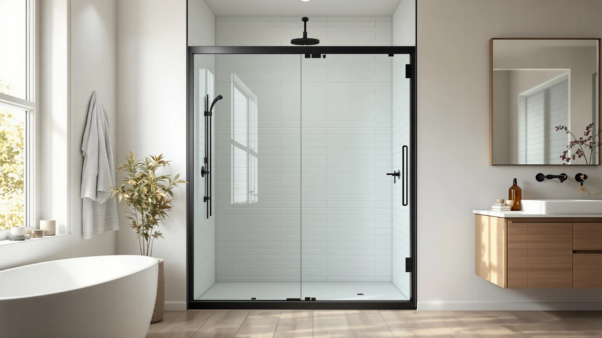

Best Shower Door Seal Strip (2026)
Prices and picks verified as of November 2026. Independent, reader-supported reviews.


Quick Answer
The best shower door seal strip for most 3/8-inch frameless showers is the AmazerBath 3 PCS Shower Door Bottom Seal, a segmented kit that covers up to 47.25 inches of door edge for $8.99. If your door slides on a track or sits in a metal frame instead, skip ahead to the FCSOTSPS or the Framed Shower Door Bottom Seal below, since standard frameless seals will not fit either setup.
Our pick: AmazerBath 3 PCS Shower Door, $8.99 Check Price on Amazon
Bottom line: our top pick is the AmazerBath 3 PCS Shower Door Bottom Seal for 3/8" at $9.49. The best budget option is the Zengest Shower Glass Door Seal Strip at $11.99.
Things to Know Before You Buy
- Glass thickness decides fit first. Every shower door seal strip in this guide is built for 3/8-inch glass, and a seal sized for 1/4-inch or 1/2-inch panels will not seal properly even if the length matches.
- Bottom seals and side seals solve different leaks. A bottom seal stops water pooling on the floor outside the shower, while a side seal like the Raycity closes the vertical gap along the wall or an adjoining panel.
- Material affects how long a seal stays clear. Silicone and polycarbonate strips resist the yellowing that PVC seals develop after months of daily moisture.
- Sliding and framed doors need different hardware than frameless glass. A seal built for a frameless swing door, such as the AmazerBath, will not snap into a sliding door's track guides.
- Most strips can be trimmed, but segmented kits skip that step. Scissors or a utility knife handle continuous strips, while pre-cut segments like the AmazerBath install without any cutting at all.
Finding the best shower door seal strip starts with a tape measure, not a shopping cart. Glass thickness, floor gap, and whether your door slides or swings on hinges all decide which strip will actually stop water from escaping your shower, and a seal that looks identical to another one online can be the wrong size entirely. We compared seven bottom and side seals built mainly for 3/8-inch frameless glass, the thickness most common in modern enclosures, along with options for sliding and framed doors. Our pick for most bathrooms is the AmazerBath 3 PCS Shower Door Bottom Seal, a segmented $8.99 kit that covers up to 47.25 inches of door edge without relying on one long strip to fit perfectly.
A shower door that leaks even a little does more damage than a few drops on the bathmat. Water that escapes past a worn or missing seal strip finds its way under vinyl flooring, into drywall, and behind baseboards, where it can sit long enough to warp wood and feed mold before anyone notices. Replacing a cracked or flattened seal costs less than ten dollars in most cases, which makes it one of the cheapest fixes in a bathroom that still prevents real structural damage.
We sorted our picks by what kind of door and gap each one actually solves, since no single shower door seal strip covers frameless, framed, and sliding doors equally well. You will find the best option for a standard bottom seal, a long trimmable strip for side edges or multiple doors, and dedicated picks for sliding bypass doors and framed enclosures further down. Measure your glass thickness and floor gap before you buy, since that single step rules out most of the wrong choices on its own.
Why You Should Trust Us
Ilane Tall covers bathroom hardware and fixtures for Best Shower Doors, focusing on the small parts, like hinges, tracks, and seal strips, that determine whether a shower door holds up day to day. We do not own or install these products ourselves; we are not a testing lab. Instead, we research manufacturer specs, verified Amazon buyer feedback, and compatibility data for each shower door seal strip, then compare those findings against the measurements that matter most: glass thickness, floor gap, and total length of coverage.
How We Picked
We started by pulling every shower door seal strip in our product database built for the glass thickness most frameless doors use, 3/8 inch, along with a handful of options for sliding and framed doors that readers search for nearly as often. From there, we narrowed the list by checking stated compatibility against common complaints in verified reviews, since a seal that claims to fit most doors often turns out to fit only one specific gap size. We also weighed price per inch of coverage, material (silicone, PVC, or polycarbonate), and whether installation required adhesive, a clip, or a snap-in track, since those differences decide how easy a seal is to replace later.
How We Compared
We compared each shower door seal strip using the specifications listed by its manufacturer, cross-checked against verified buyer reviews on Amazon for fit, durability, and installation complaints. We grouped strips by door type first, frameless, sliding, or framed, since a bottom seal rated for a swinging frameless door will not snap into a sliding door's guide track. Within each group, we compared material behavior reported by owners, such as how quickly PVC yellows versus how polycarbonate or silicone holds up, along with length, price, and floor-gap tolerance where manufacturers specified it. We did not physically install any of these seals ourselves; our picks reflect research into manufacturer specs and owner-reported performance, not personal use.
Our Picks

AmazerBath 3 PCS Shower Door
What we like
- Cheapest bottom seal in this comparison at $8.99
- Segmented pieces flex independently instead of cracking under one long run
- Installs in about five minutes per section with no glue mixing
- Clear finish blends with most frameless glass
Flaws but not dealbreakers
- Three segments mean two visible seams across the full width
- Only fits 3/8-inch glass, not 1/4-inch or 1/2-inch doors
- Maxes out at 47.25 inches of coverage
| Material | — |
| Size | Bottom - 3-Section Segmented |
The AmazerBath 3 PCS Shower Door Bottom Seal is our pick for most frameless showers because it solves the single biggest headache with long seal strips: fitting a door that is wider than one continuous piece. Instead of one 47-inch strip, AmazerBath ships three separate 15.75-inch segments that install side by side, together covering up to 47.25 inches of door edge. That segmented design means each piece flexes independently at the joints rather than cracking under one long run of tension, and at $8.99 it is the least expensive bottom seal we compared. It is built specifically for 3/8-inch frameless glass, so measuring your door's thickness with a caliper or ruler before ordering matters more here than with most seal strips.
Installation takes about five minutes per section, according to the product's own instructions, and reviewers consistently note that the clear finish blends well with most frameless glass without drawing attention to itself. The tradeoff for that segmented flexibility is visible seams: a 47-inch bottom edge made from three pieces will show two small joints where a single continuous strip would not. It also will not work for 1/4-inch or 1/2-inch glass, and anyone with a door wider than 47.25 inches needs a different product, like the longer Zengest or Raycity strips. For a standard 3/8-inch frameless door at or under that width, it remains the simplest and cheapest shower door seal strip in this guide.

Zengest Shower Glass Door Seal
What we like
- 120 inches covers multiple doors or one extra-wide panel from a single purchase
- Soft silicone trims cleanly with ordinary scissors
- Seals against sound and drafts in addition to water
- Flexible enough to work into corners that rigid strips cannot reach
Flaws but not dealbreakers
- Adhesive bond weakens if the glass isn't completely clean and dry first
- Limited to a 3/8-inch seal gap
- Clear silicone will eventually need wiping down as it collects soap scum
| Material | — |
| Size | — |
At 120 inches, the Zengest Shower Glass Door Seal Strip is long enough to seal more than one door from a single purchase, which makes it the pick for anyone replacing seals across multiple frameless enclosures or a single unusually wide door. It is made from soft, transparent silicone rather than PVC, and the 3/8-inch seal gap is designed to block water as well as sound and drafts, according to the manufacturer. The self-adhesive backing sticks directly to clean glass, and the strip trims to length with ordinary scissors, so one roll can become several custom-cut seals instead of a single fixed piece.
Owners report that the silicone holds up well against the stiffening and yellowing that affects PVC seals over time, and its flexibility makes it easier to work into tight corners than rigid strips. The adhesive bond depends heavily on surface prep: reviewers note that any residue, soap film, or moisture left on the glass before installation weakens the hold significantly, so wiping the surface down first is not optional. It is also limited to a 3/8-inch gap, the same thickness constraint as most of the strips here, and like any clear silicone seal it will eventually pick up soap scum that needs periodic cleaning to stay transparent. For long or multiple doors, it is the most flexible seal strip we compared.

Yecaye 3 Pack 3/8" x
What we like
- Three full-length seals mean a worn one swaps out in minutes
- Clip-on plastic base skips glue entirely
- Soft rubber fin seals smoothly against the shower floor
Flaws but not dealbreakers
- Priciest option per pack at $22.99 for three
- PVC yellows and stiffens faster than silicone or polycarbonate
- 39-inch length may need two pieces joined on wider doors
| Material | — |
| Size | 39" x 3/8" (3pcs) |
The Yecaye 3 Pack Shower Door Bottom Seal is built around a simple idea: bottom seals get dirty and discolored faster than any other part of a shower door, so buying three at once beats reordering every few months. Each 39-inch PVC strip uses a flexible plastic clip base with a soft rubber sealing fin, and the clip snaps onto 3/8-inch frameless glass without adhesive or glue. At $22.99 for three, the per-seal cost lands in the middle of our comparison, but having spares on hand means a yellowed or worn seal can be swapped in minutes rather than waiting on a new order.
Reviewers consistently note that the clip grips securely once installed and that the rubber fin creates a solid water barrier against the shower floor. PVC is also the material most likely to yellow or stiffen with constant moisture exposure, which is part of why Yecaye sells it in a three-pack instead of a single long-lasting piece. At 39 inches, each strip is shorter than several alternatives here, so a wider door may need two trimmed and joined, adding an install step the AmazerBath or GENNHOPO do not require. For anyone who wants a stocked replacement plan rather than a single permanent fix, it is a reasonable shower door seal strip to keep on hand.

Raycity 10 Feet Shower Door
What we like
- 120 inches covers the full side edge of most doors with extra to spare
- Folds repeatedly without cracking thanks to silicone flexibility
- Self-adhesive backing skips clips or glue entirely
Flaws but not dealbreakers
- Seals the side edge only, not the bottom
- Still limited to 3/8-inch glass
- Extra length means more trimming waste on shorter doors
| Material | — |
| Size | — |
Every other pick in this guide is a bottom seal, but the Raycity 10 Feet Shower Door Side Seal Strip solves a different leak path: the vertical gap along the side of a frameless door where it meets the wall or an adjoining glass panel. At 120 inches, it is long enough to run the full height of most doors with material left over, and the self-adhesive silicone backing installs as one continuous piece rather than clips or segments. Raycity describes the middle section as able to fold repeatedly without breaking, which matters for a side seal that has to curve slightly around a door's edge rather than lying flat like a bottom strip.
Owners report that the silicone stays pliable in regular use and that the adhesive holds without damaging the glass when it is eventually removed. Because it only addresses the side edge, it will not stop a leak at the bottom of the door, so pairing it with one of the bottom seals above covers both leak points on the same enclosure. It is still limited to 3/8-inch glass, consistent with the rest of this comparison, and the generous 10-foot length means more trimming waste if your door's side edge is shorter than average. For side-edge leaks specifically, it is the clearest shower door seal strip option we found.

GENNHOPO 2-Pack ShowerDoor Bottom Seal
What we like
- Rated for floor gaps up to 11/32 inch, more forgiving than most bottom seals
- Polycarbonate resists the yellowing that affects PVC over time
- Two-pack keeps a spare ready before the first one wears out
Flaws but not dealbreakers
- 36-inch length is shorter than several alternatives here
- Costs more than the segmented AmazerBath for less total length
- Still built for 3/8-inch glass only
| Material | — |
| Size | 3/8''(10mm) |
The GENNHOPO 2-Pack ShowerDoor Bottom Seal targets a problem the other PVC and silicone strips in this guide do not address directly: floor gaps wider than the typical seal can handle. GENNHOPO rates its 36-inch polycarbonate strips for floor gaps up to 11/32 inch, more forgiving than most 3/8-inch bottom seals, which helps on uneven bathroom floors or doors installed slightly high. The C-type design still fits standard 3/8-inch frameless glass, and the two-pack means a backup seal is already on hand once the first one wears out.
Polycarbonate is the material advantage here. According to the manufacturer, it resists the yellowing that affects clear vinyl and PVC after long-term use, staying transparent longer than the Yecaye or AmazerBath seals in daily moisture. The soft bottom lip is also designed to move smoothly against the shower floor rather than dragging, which owners report makes the door easier to open and close. At 36 inches, it is shorter than the Zengest or Raycity strips, so a wide door panel may need two sections, and at $18.29 it costs more than the segmented AmazerBath for less total length. For gap-tolerant installs, it remains a strong shower door seal strip pick.

FCSOTSPS Sliding Shower Door Bottom
What we like
- Snaps into place in minutes without adhesive or glue
- Built specifically for the guide-track gaps sliding doors have
- Two 36-inch pieces give full bypass-door coverage
Flaws but not dealbreakers
- Most expensive seal in this comparison at $26.99
- Requires measuring four separate gaps before ordering
- Will not work on hinged or pivot doors
| Material | — |
| Size | For 3/8" Glass |
Sliding and bypass shower doors use track hardware that most bottom seals, including every other pick in this guide, are not built to fit. The FCSOTSPS Sliding Shower Door Bottom Seal is designed specifically for that hardware, with two 36-inch pieces that snap into place without adhesive or glue on bypass-style, barn-door-style, or two-panel frameless sliding doors. Because it relies on a snap-in fit rather than glue, measuring correctly before ordering matters more here than with any other seal in this comparison.
FCSOTSPS specifies four separate measurements buyers need to check first: door panel length, the floor gap (at least 0.43 inch), and two bottom guide gaps (at least 0.5 inch inside, 0.59 inch outside), since the seal has to clear the sliding track on both sides. Reviewers note that once those measurements line up, installation takes only a few minutes and the snap-in design creates a solid water barrier without any splicing or micro-gaps along the 36-inch length. At $26.99, it is the most expensive seal in this guide, and it only works on sliding or bypass doors, not hinged or pivot doors. For a sliding shower door seal strip, though, it is the only pick here built for that hardware specifically.

Framed Shower Door Bottom Seal
What we like
- 108 inches is the longest single roll in this comparison
- Tee-insert shape is built for framed door channels, not bare glass
- Silicone resists tearing and temperature swings
Flaws but not dealbreakers
- Not designed for frameless glass doors
- White color stands out next to clear frameless seals
- Both length and height need trimming to match your frame
| Material | — |
| Size | 108 inches |
Framed, hinged, and swinging tub enclosure doors need a different seal profile than frameless glass, and the Framed Shower Door Bottom Seal is built with a Tee-insert shape made for exactly that kind of door frame rather than a bare glass edge. At 108 inches, it is the longest single roll in this comparison, long enough to cover one unusually wide enclosure or supply seals for more than one framed door from a single purchase. It comes in white, which matches most framed door hardware better than the clear strips built for frameless glass.
The silicone material is tear-resistant and holds up against temperature swings, according to the manufacturer, and owners report it stays quiet while sliding rather than squeaking against the frame. Both the length and height can be trimmed to a custom size, which gives it more flexibility across different frame profiles, but also means more cutting work upfront than a pre-sized strip like the AmazerBath. It is not a fit for frameless glass doors, so anyone with a modern frameless enclosure should look at the bottom seals earlier in this guide instead. For framed or hinged doors specifically, it is the most purpose-built shower door seal strip we compared.
Quick Comparison
| Product | Material | Price | Rating | Best for | Get it |
|---|---|---|---|---|---|
| AmazerBath 3 PCS Shower Door | — | $8.99 | — | Budget frameless bottom seal | View on Amazon → |
| Zengest Shower Glass Door Seal | — | $11.99 | — | Long runs, multiple doors | View on Amazon → |
| Yecaye 3 Pack 3/8" x | — | $22.99 | — | Stocking spare seals | View on Amazon → |
| Raycity 10 Feet Shower Door | — | $14.99 | — | Side-edge sealing | View on Amazon → |
| GENNHOPO 2-Pack ShowerDoor Bottom Seal | — | $18.29 | — | Wider floor gaps | View on Amazon → |
| FCSOTSPS Sliding Shower Door Bottom | — | $26.99 | — | Sliding/bypass doors | View on Amazon → |
| Framed Shower Door Bottom Seal | — | $11.99 | — | Framed/hinged doors | View on Amazon → |
The Competition
Beyond the seven shower door seal strips above, we also looked at several categories we chose not to recommend. Universal one-size strips that claim to fit glass anywhere from 1/4 inch to 1/2 inch came up often in our research, but a seal loose enough to stretch across that whole range rarely grips tightly enough at any single thickness, according to the complaints we found in verified reviews. We also passed on foam-core strips with no stated floor-gap rating, since buyers in those reviews frequently reported gaps reopening within weeks of installation. Bulk continuous strips sold without any compatibility chart were another category we skipped, because matching glass thickness and floor gap correctly matters more for a shower door seal strip than length or price alone. After weighing fit, material, and verified owner feedback across all of these categories, the AmazerBath 3 PCS Shower Door Bottom Seal remains our best shower door seal strip pick for most 3/8-inch frameless installs.
What these prices have actually done
We check the price of every product on this page every hour and keep the record. These figures are observations, not estimates or forecasts.
- AmazerBath 3 PCS Shower Door Bottom Seal for 3/8"(10mm) Glass has ranged from $8.49 to $9.49 across 35 hourly price checks since September 27, 2026. It was $9.49 at the last check.
- Zengest Shower Glass Door Seal Strip has held at $11.99 across 33 hourly price checks since September 27, 2026. It was $11.99 at the last check.
- Yecaye 3 Pack 3/8" x 39" Shower Door Bottom Seal has ranged from $20.79 to $22.99 across 35 hourly price checks since September 27, 2026. It was $22.99 at the last check.
- Raycity 10 Feet Shower Door Side Seal Strip has ranged from $11.19 to $14.99 across 34 hourly price checks since September 27, 2026. It was $14.99 at the last check.
- GENNHOPO 2-Pack ShowerDoor Bottom Seal 3/8" x 36" Polycarbonate has ranged from $16.51 to $18.29 across 31 hourly price checks since September 27, 2026. It was $18.29 at the last check.
- FCSOTSPS Sliding Shower Door Bottom Seal has held at $26.99 across 35 hourly price checks since September 28, 2026. It was $26.99 at the last check.
Last updated November 9, 2026. Amazon prices change constantly; the figure you see on Amazon right now is the one that counts.
Frequently Asked Questions
What size shower door seal strip do I need?
Measure your glass thickness first. Most shower door seal strips, including every pick in this guide, are built for 3/8-inch frameless glass, and a strip sized for 1/4-inch or 1/2-inch glass will not seat correctly. Then measure the gap between your door and the floor or frame, since that number decides whether a standard bottom seal fits or you need a wider-gap option like the GENNHOPO.
How often should you replace a shower door seal strip?
Owners report that PVC seals start to yellow or stiffen within six months to a year of daily shower use, while silicone and polycarbonate versions tend to stay clear and flexible longer. Replace a seal strip as soon as you notice water escaping past the bottom edge, since a cracked or flattened seal will not reseal itself.
Can you cut a shower door seal strip to fit?
Yes. Most of the strips in this guide, including the Zengest and Yecaye, are designed to be trimmed to length with ordinary scissors or a utility knife. Segmented kits like the AmazerBath skip cutting entirely, since each section is already sized for standard door widths.